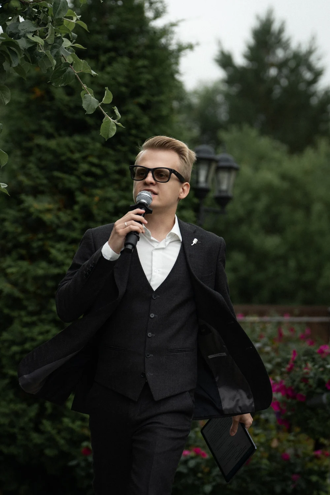
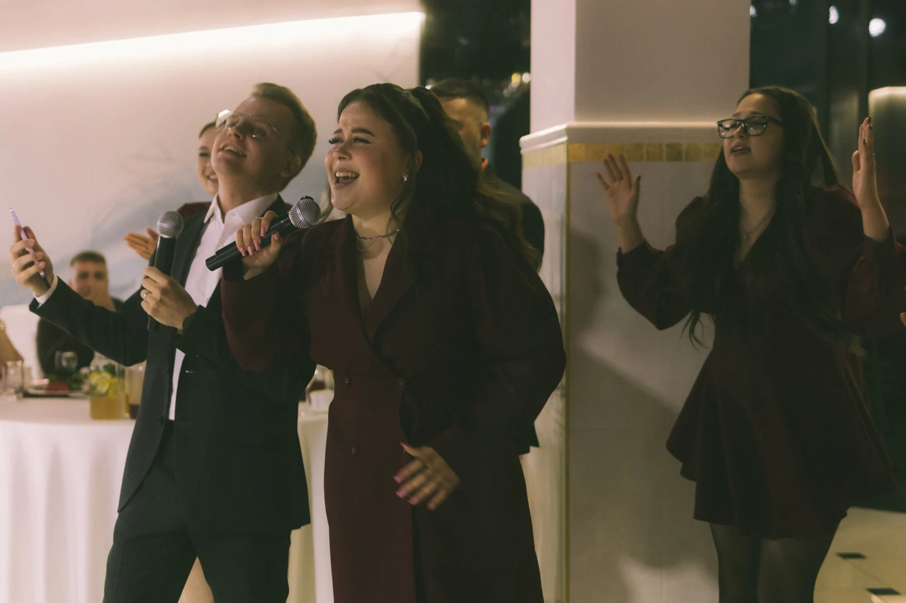

Знакомство
На встрече или созвоне обсуждаем пару, гостей и настроение свадьбы. Узнаю пожелания, интересы и музыкальные вкусы.
ДЛЯ СВАДЕБНЫХ АГЕНТСТВ
Легко. Бережно. С юмором.
Ведущий, который знакомится с парой
и помогает рассказать её историю.

Ваши люди. Ваша история.Я Дмитрий. Более трёх лет работаю ведущим. Соединяю юмор, динамику и живое общение.
Подбираю программу под пару, формат свадьбы и гостей. Узнаю историю знакомства, важные моменты и музыкальные вкусы. Обсуждаем, что хочется увидеть на празднике, а чего лучше избежать.

Живое общение становится
частью вашей истории.
На встрече или созвоне обсуждаем пару, гостей и настроение свадьбы. Узнаю пожелания, интересы и музыкальные вкусы.
Собираю программу с личными историями и подходящим юмором. Согласуем сценарий, музыку и тайминг с парой и организатором.
Веду праздник, объединяю гостей и поддерживаю настроение. Оставляю место для живых реакций и общения.
ЗА ЧАС РАБОТЫ
Знакомство с парой,
персональная подготовка
и ведение свадьбы.
Продолжительность работы и итоговый гонорар согласуем под конкретное событие.
Скачать презентацию PDFБуду рад познакомиться с вашей командой и обсудить ближайшие свадьбы.